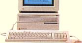

II2Cx 40MHz改造について

II2Cxの筐体（ケース）はII2Ciとまったく同じで、PowerPC7100、Quadra650、Centris650のロジックボードが入ります。このII2CｘはMACを勉強したいという友達に、貸してあったのですが、起動しなくなってしまったので、ケースだけを使うことにしました。最初はPowerPC7100を入れて、動かしていたのですが、ロジックボードが壊れてしまったので、余っていたCentris650のロジックボードに取り替え、Wombat改造をして４０MHｚにクロックアップしてあります。
マッキントッシュのページに戻る